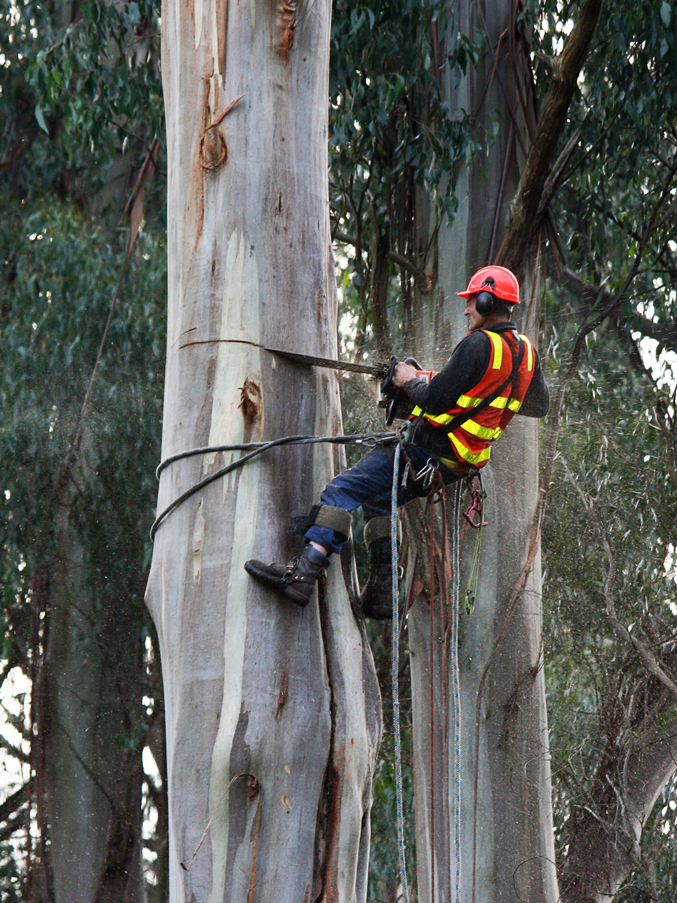
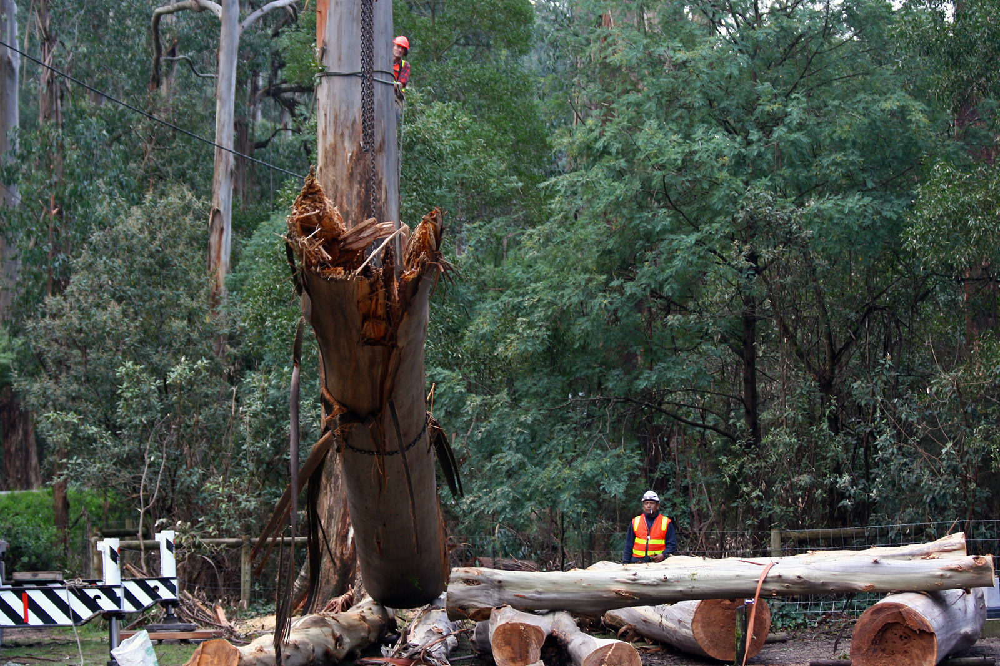
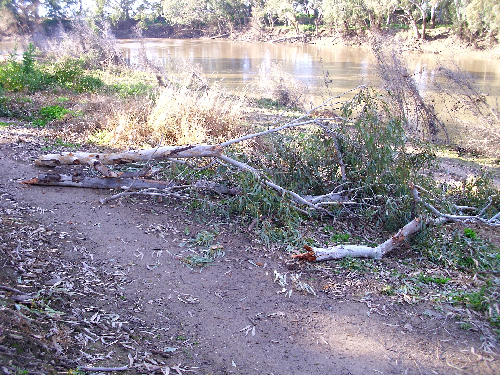
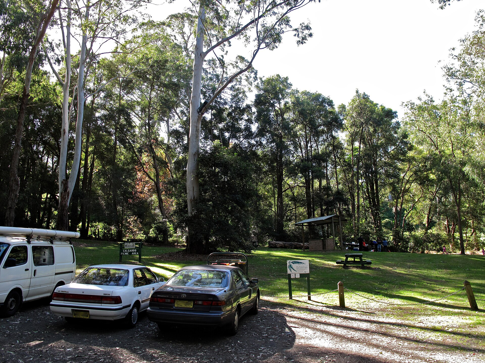

Tree removal
Full removals for dead, leaning or unwanted trees. Scope depends on height, access and what’s underneath.
Dangerous trees, overcrowded yards and leftover stumps around Camden, Narellan, Oran Park, Gregory Hills and the wider Macarthur area.
Request a quote below and a local arborist covering your suburb will get in touch. No obligation.

Residential and light commercial tree work across Camden and Narellan.

Full removals for dead, leaning or unwanted trees. Scope depends on height, access and what’s underneath.
Grind leftovers below ground so you can turf, pave or plant over the spot. Common after a removal.

Storm-split limbs, trees too close to roofs or power lines. Flag urgency on the form so the arborist can prioritise.

A few trees plus stumps on one visit. Useful when clearing for a pool, extension or driveway.
Camden, Narellan, Narellan Vale, Oran Park, Gregory Hills, Harrington Park, Mount Annan, Currans Hill, Elderslie, Spring Farm, Cobbitty and the wider Macarthur area.
Camden and Narellan yards often mix large eucalypts with newer estate plantings. Access for trucks and chippers matters as much as the tree itself — mention gates, slopes and power lines on the form.
A local arborist for your suburb. We take the enquiry and put you in touch — they quote and carry out the job if you go ahead.
Depends on height, species, access, power lines and whether the stump is included. Send an enquiry with your suburb and a short description for a local quote — we don’t publish fixed prices here.
Yes — Narellan, Oran Park, Gregory Hills, Harrington Park and Mount Annan as well as Camden. The arborist confirms coverage for your address.
Sometimes — especially for significant trees under Camden Council rules. The arborist can advise once they know the species and location. Mark “not sure” on the form if you’re unsure.
We only use your details to respond to your enquiry. If you tick consent, those details may be shared with a local arborist for quoting. See the privacy note in the footer.
Camden, Narellan & Macarthur. Takes about a minute — a local arborist will follow up.